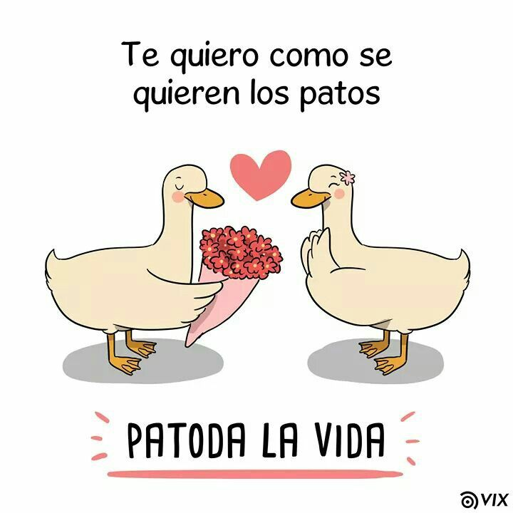

Nuestra historia desde la perspectiva de una ratona
El inicio de clases me tenía muy muy nerviosa jsjs no sabía como era la universidad, quizás era muy diferente de todo lo había visto. Por las tardes había un enano que sobresalía y mucho, él hablaba siempre tenía algo que decir eso me llamó mucho la atención ya que hacía go especie jsjs chacota pero si aprendía jsjsjsj yo dije waos. Antes de terminar el semestre cha cha cha chan wajaja el profesor de RRHH dijo go haremos un trabajo final jsj quién pensaría que todo podía cambiar y que podía conocer más de ese chico jsjs.
Una tarde me llegó un mensaje, un mesaje de una persona que tenía un perfil muy peculiar jsjs, yo pensé mmm quizás sea uno de esos enanos que no trabaja ujum, pero cuando menciono jsjs el nombre de uno de los compas que conocía go Daniel pensé quizás es go el compa que está a su costado o go go Piero sjjs eso es lo malo de no registrar los nombres. Él me preguntó si había go go espacio para dos compas más entonces según mis go cálculos si necesitabamos a alguien más, pero si nos pasamos por uno ujum normal solo se go hablaba, jsjjs también le pregunté a Emerson sjsjs ese enano, bueno pero al final los unimos.
Al principio no sabía con quién hablaba exactamento pero por el humor y ujum la forma de hablar sospeché quién era jsjs y no fue errado sjjs, bueno no recuerdo bien el día pero de un día para otro jsjs empezamos a hablar más, me gustaba hacerle bromas wajjaja, aveces si resulto ser así, vi q con él normal podía hablar así, pro eso me sentí muy bien sjjsjs con libertad, recuerdo perder mi carnet y pedirle prestado wahajjaja digo era de chill, solo quería ver como reaccionaba sjjsjs me sorprendió q lo hubiera pensado jsjjsjs.
Una vez cuando estaba mal yo pensé aaaaa este enano mmmm... haber haber esta mmm parece que está muy mal aaaaaaaaaa, lo peor es q es semana de exámenes, no podía no hacer nd, entonces wajajja le di go un poco de papel, bueno hsjhsjs yo adelante jsjsj estaba especie temblando aa modo saquenme de aquí como un gato ujum todo asustado. En la tarde recibí un mensaje jsjs diciendome gracias por el papel sinceramente me sentí feliz wajjaja.
Recuerdo también que en los go labs me dió una pulsera de la amistad sjjsjs yo dije ohh jsjsjs eso si me sorprendió, hasta ahora lo go conservo wajajja me gusta es una muy muy muy linda pulsera si si ujum me encanta, claro si es de mi bella damisela, digo sjsjsj me gustó mucho pero también casi lo sobrepienso jsjs pero recordé que me dijo que era de la go amistad jsjsjs. Bueno cada día hablabamos jsjs y ujum, quedamos en que me acompañaría a la RENIEC wajajaj bueno jsjs al final yo lo seguí o más bien mis pies se movieron solos.
Por mi cabeza pasaba mmmm 2 o 3 horas aaaaaaaa hablar presencialmente aaaaaaaa, que le diría quería q todo saliera bien sjjsjs aaaaaaaa, bueno jsjsj lo bueno es q no fue incómodo hablabamos como normalemnte hablabamos por Whatsapp me sentí tranquila, aunque también me di cuenta que cuando sjjs hacía una go cara o empezaba a especie bailar no le podía quitar los ojos de encima, por eso intenté disimular, tenía que hacerlo ujum jsjsj bueno esa tarde la atesoraré ujum, porque pude tomarle una go fotito wajaja digo sjjs fuí feliz jsjsjs, hicimos algunas locuras. Además de que casi aplastó a mi bella damisela jsjsjs.
Hablando del término bella damisela en realidad creo que fue incosciente bueno ujum, pensé que se asustarí y ya no me volvería a hablar, pero no lo hizo jjjsjs incluso ya me había preparado psicológicamente. El 1° de agosto cuando mi bella damisela me dijo que podía rescatar otras bellas damiselas, algo dentro de mí me dijo que eso yo no quería, entonces me di cuenta que realmente sí se sentía algo por mi bella damisela, algo que tenía que aceptarlo. En ese momento tomé una decisión, y no me arrepiento porque cada día mi bella damisela me demuestra que hice lo correcto.
Ahora cada día contigo es realmente especial, cada día es una nueva aventura, me gustaría conocer más sobre ti. Para mí tú eres como un río interminable que me muestra nuevas formas de amar, me haces querer saber más sobre ti, cada día me enamoras también con solo una sonrisa tuya y cada pequeña cosa que haces me hace simplemente la persona más feliz del mundo, sabes tu felicidad es mi prioridad y espero darte la mejor versión de mí, quiero que crezcamos juntos y seamos muy felices, aunq sé que habrán problemas quiero superarlos contigo porque en ti veo alguien increíble que no se rendirá y yo quiero ser la persona en la que puedas confiar si algo pasa también, quiero ser tu refugio, quiero ayudarte y quiero quedarme a tu lado todo lo que pueda, me gustaría sinceramente tener una vida contigo mi amor ❤, mi rey, mi patito lindo, mi bella damisela.
wajajja recuerda que ya firmaste un go contrato digo muak muak muak
¡Continuemos! wajajja muak muak muak